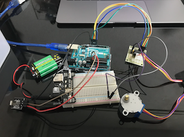

Arduinoのセットとテキストパーツを購入して１から勉強してきた。その中でArduinoでできることの多さや可能性を感じ、何かに活かしたいと思った。
そしてそれができたら誰かの役に立つものであったらより良いと考えた。そこでまず身近な人に役立つものはないかと思い、足が不自由な祖母のために、朝になると自動でカーテンが開く装置を作ってみたいと思った。実際調べると既に製品としては売っている（1万円くらい）がArduinonならもっと安く作れる（上手くいけば）と思うので作成に取りかかって見た。
また、前期の前半にはグループワークや個人ワークでFusionを使って学んできたので、今回前期のまとめとしてFusionも使用していきたい。（3Dプリンターで作るだけの状態まで）
Arduinoを作動させるのにも様々なセンサーがあり、今回は日照センサーで作ってみたい。朝、太陽光に反応して作動する というものだ。他の方法も模索中だがとりあえずこれで進める。
完成図としてはこんなものができたら良いと思う。
光センサを利用したシステムで取りかかってきた。しかし、天気の悪い日などももちろんあり、不十分だと気づき、リモートで操作できるしように変更した。
IRレシーバーを購入したのでこれを使いながら勉強していく。
レシーバーを使いArduinoで使うリモコンと連動はできて配線もしたものの、モーターが動かなくなってしまった。

シリアルモニタからはきちんと受信しているので、モーターの動作確認をしてみたら壊れてしまったようだ。新しいものを頼んだものの、発送に時間がかかるようだ…